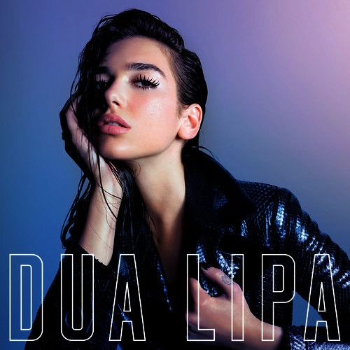
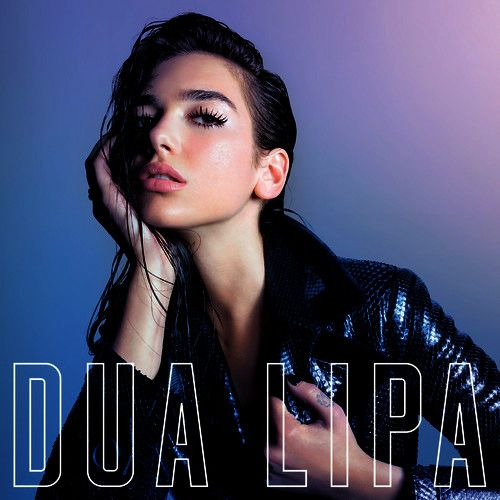
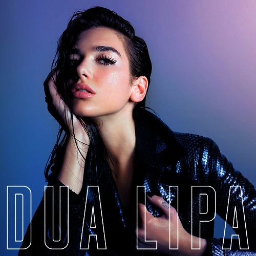
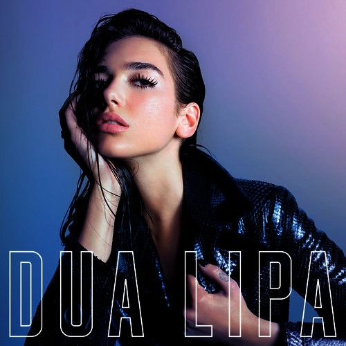

Dua Lipa es una cantante y compositora británica. Nació en Londres, Inglaterra, el 22 de agosto de 1995. En 2016 logró, con su sencillo ”Be The One”, internacionalizar su carrera musical tras ingresar en las veinte principales canciones de las listas de éxitos en varios países europeos. La familia Lipa es oriunda de la ciudad de Pristina, capital de Kosovo, de donde emigraron en los pasados años noventa debido a la violencia y la represión por la que atravesaba el país balcánico en aquel entonces. Dukagjin Lipa y su esposa Anesa se mudaron a Londres, donde a los pocos años nació la primera de los tres hijos del matrimonio: Dua; luego, en 2001 nació Rina y en 2006 Gjini, que es el menor. Las primeras nociones de canto las aprendió la niña Dua de su padre, pero fue al escuchar las canciones del álbum "Whoa, Nelly!",de Nelly Furtado, cuando se le despertó la vena artística y quiso ser cantante. La artista Pink también fue una influencia importante en sus comienzos musicales. En la escuela secundaria Dua tocó el violonchelo por un corto período. También perteneció a la coral, de la que fue rechazada pues en opinión del profesor de canto sus habilidades vocales no estaban suficientemente desarrolladas; el educador manifestó, asimismo, que ni siquiera llegaba a las notas altas. Eso produjo en la muchacha gran aflicción e inseguridad sobre sus habilidades vocales; sin embargo, tiempo después Dua Lipa ingresó en la Sylvia Young Theatre School, donde recuperó la confianza en su talento artístico.

| Fecha | Ciudad | Lugar |
|---|---|---|
| 01-02-2020 | Miami - USA | Space Bloom |
| 05-02-2020 | Dallas - USA | Square Timon |
| 20-03-2020 | Santiago - CHILE | Plaza Kabro |
| 06-04-2020 | Denver - USA | Center Denver |
| 10-04-2020 | Paris - FRANCE | We Duble |